Balochistan
Land of Adventure and Beauty
About Balochistan
Balochistan, Pakistan's largest province, is a place of stunning natural beauty and rich culture. It's like a hidden gem, full of surprises! Imagine towering mountains covered in snow, vast deserts with colorful sand dunes, and beautiful blue lakes. Balochistan has it all! You can go hiking, camping, or even explore ancient ruins. It's like stepping back in time! The people of Balochistan are known for their warm hospitality. They love sharing stories about their culture and traditions. You can try delicious local food, like the spicy sajji (roasted meat), or sweet halwa. There's so much to discover in Balochistan. From exploring hidden valleys to meeting friendly locals, it's an adventure waiting to happen!
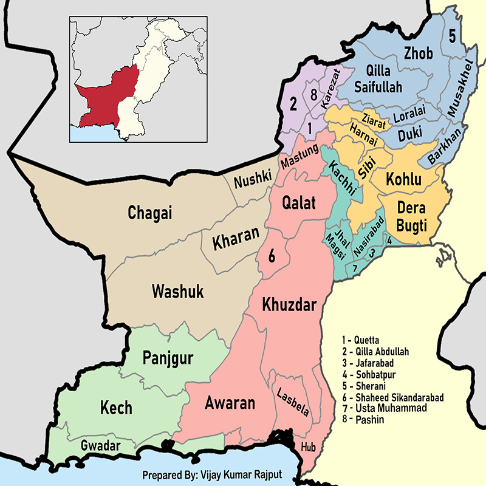
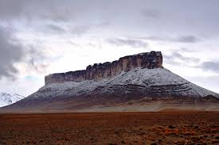
Balochistan Culture
Balochistan's culture is as vast and beautiful as its landscape. The Baloch people are known for their warm hospitality and strong sense of community. They have a rich history and traditions that have been passed down through generations. Family is very important in Baloch culture. They often live in large extended families, which creates a strong support system. Music and dance are also a big part of their lives. Traditional Balochi music is known for its soulful melodies and rhythmic beats. Balochistan is also home to many different tribes, each with its own unique customs and traditions. Despite these differences, they all share a deep love for their homeland and a strong sense of pride in their heritage.
Balochi Poch
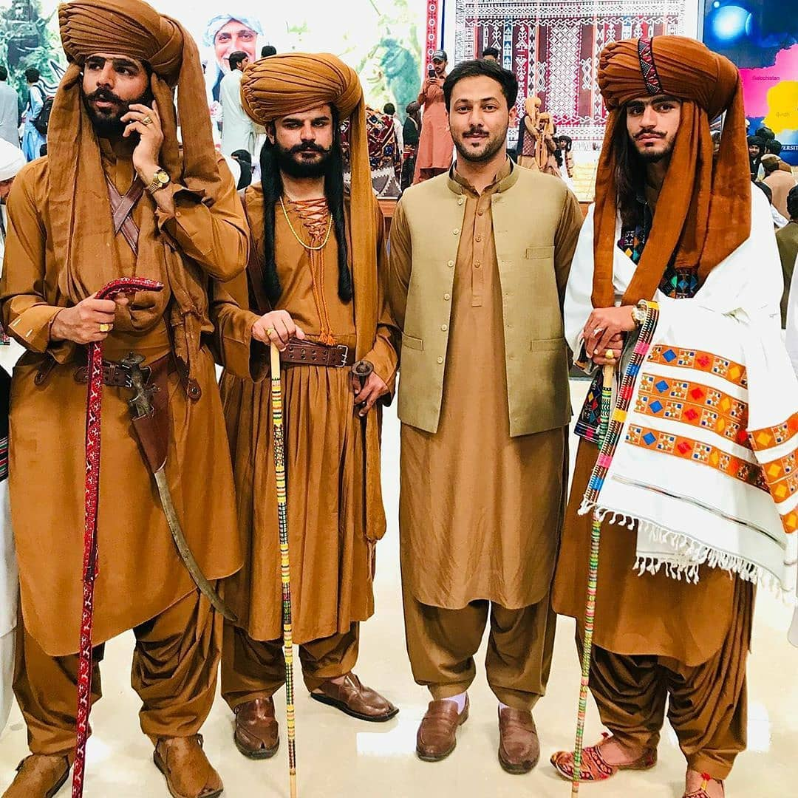Balochi Poch is a traditional Balochi dance filled with energy and joy! It's like a fun party where everyone dances together, showing off their amazing moves. It's a great way to celebrate and have fun!
Paskh
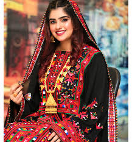Balochi Paskh is a beautiful, colorful dress worn by Baloch women. It's like a fancy outfit with lots of pretty designs and embroidery. It makes the women look like princesses!
Ajrak
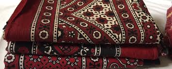Balochi Ajrak is a special kind of cloth with beautiful patterns. It's like a colorful puzzle made of blue and black. People use it to make clothes, bags, and other cool things. It's a famous part of Baloch culture!
Balochi Music
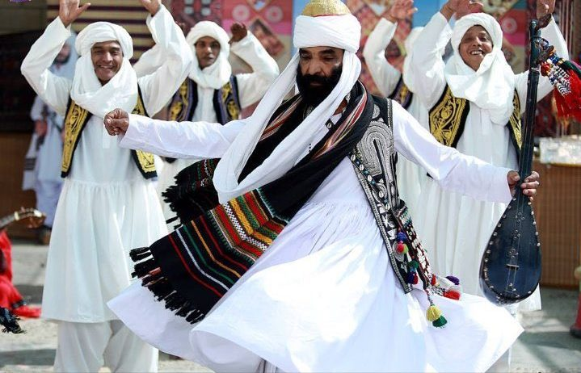Balochi music is full of energy and passion! It's like a colorful story told with sound. With its fast beats and beautiful melodies, it makes you want to dance and sing along. It's a big part of Baloch culture and people love to share it!
Baloch Dance
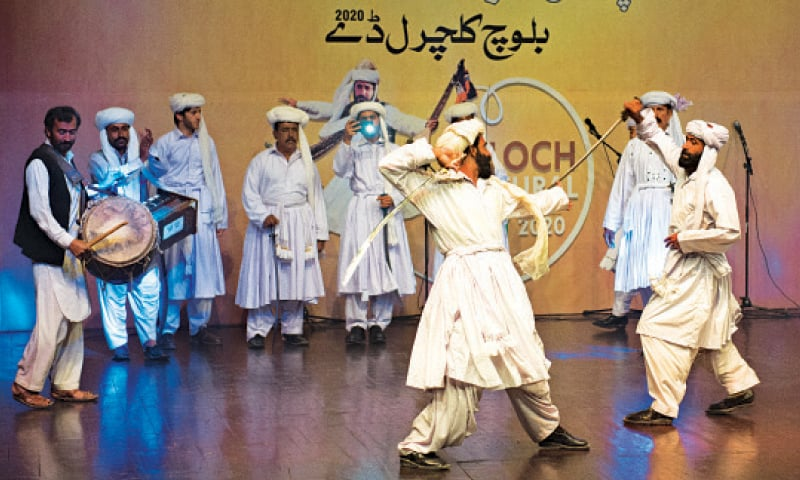Balochi dance is super fun and energetic! It's like a party where everyone moves together with cool steps and hand movements. The dancers wear colorful clothes and look really happy while dancing!
Antique Show
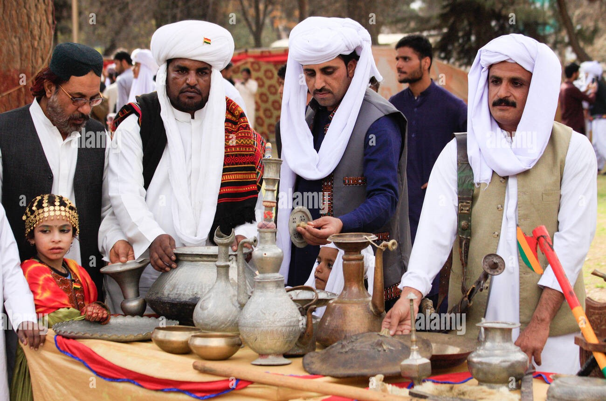Baloch Antique Shows are super cool! You can see really old and special things from Balochistan. Imagine seeing old jewelry, pottery, and even weapons! It's like stepping back in time!
Camel Adventure
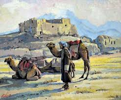Camel Adventure in Balochistan! Imagine riding a gentle camel through the vast desert. Feel the warm sun on your face and the wind in your hair. Explore hidden oases and meet friendly nomads. It's a super cool adventure!
Balochi Bugti Topi
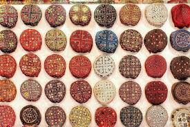Balochi Bugti Topi is a cool hat worn by Baloch people. It's usually made of soft wool and has a flat top. It keeps their heads warm in cold weather and looks really stylish.
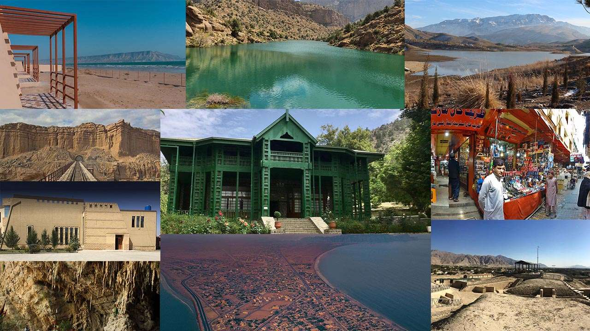
Balochistan Foods
Balochistan is not just about deserts and mountains, it's also a food paradise! Because of the hot weather, the food is often hearty and flavorful. One famous dish is Sajji, which is meat (usually goat or lamb) cooked on a big stick over hot coals. It's super juicy and tasty! If you like bread, try Kulcha, a soft bread often filled with yummy things like potatoes or cheese. For a taste of something different, try Harissa, a thick porridge made from wheat. It's like a warm hug on a cold day! And don't forget about Chamus, a dried and smoked meat that's perfect for a quick snack. Balochistan food is all about fresh ingredients and simple flavors. It's a real treat for your taste buds!